- The New Macan
-

Height: 49.7 in
Wheelbase: 97.4 in
Length: 173.4 in
-
- Horsepower375 hp at 6700 rpm
- 0 - 60 mph4.3 sec (5.0 sec w/ Sport Chrono)
- Top Track Speed180 mph
- Fuel Consumption City (estimate)18 mpg
- Highway (estimate)24 mpg
- PriceMSRP $ 82,100.00
Core Features
The new Macan – built for an intensive life in which the thirst for experience and thrills and spills are ever-present, and in which new challenges are a permanent driving force. Built for a life that refuses to be hemmed in by conventions and feels all the more authentic for it. Direct and intimate. A Sports Car that gives us what we're looking for: that feeling of being alive. The new Macan. Life, intensified.

The tremendous dynamic performance of the new Macan is thanks in part to the Porsche Traction Management (PTM) active all-wheel drive system. It comprises an electronic and map-controlled multi-plate clutch, the automatic brake differential (ABD) and anti-slip regulation (ASR). The electronically controlled multiplate clutch regulates the distribution of drive force between the rear axle and the front axle. Driving conditions are constantly monitored to enable a precise and lightning-quick response to a variety of situations.
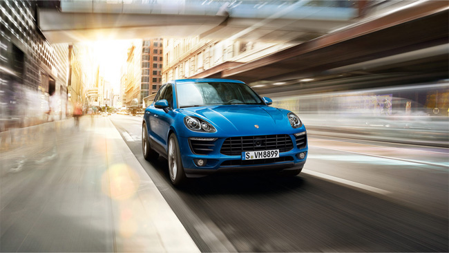
The V6 twin-turbo engines are equipped with two turbochargers arranged in parallel – one for each cylinder bank. Intake air is compressed and then fed to the engine via the respective intercooler. This cooling process achieves two things: high cylinder charge and low component temperatures.

Would you prefer to experience the gear change or the driving pleasure? No contest. The new Macan is equipped with the 7-speed PDK transmission, which changes gear in fractions of a second with no interruption in the flow of power. The advantage is that, whenever a particular gear is engaged, the next gear is already preselected. As the clutch of the engaged gear opens, the clutch of the target gear closes simultaneously. The effect is a sporty, dynamic and agile driving feel.
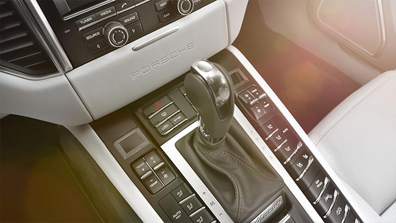
As a creator of sports cars, we know that driver and car must form a single entity. As such, you do not simply sit in the Macan – the ergonomic architecture integrates you into the vehicle. The threedimensional arrangement of the controls lends the interior a cockpit-style layout. In typical Macan fashion, the sporty front seats convey a sense of height above the road without any loss of intimacy with it.
The essentials are seen at a glance. The instrument panel has a three-tube design. Three tubes – just like in a classic sports car. Also in view is the centrally positioned tachometer. To the right is the 4.8-inch color screen, which, among other things, displays information from the on-board computer.

More Features
- Drive
- Chassis
- Safety
- Accessories
- Communication
- Transport
- Personalization
- Environment
- Macan's drive starts from the heart.
-
 Character
Character
High performance, on the other hand, is something that the new Macan S would never do without. Its 3.0-liter twin-turbo V6 engine generates 340 hp and helps it to sprint from 0 to 60 mph in only 5.2... -
 VarioCam Plus System
VarioCam Plus System
In all Macan models the intake and exhaust camshafts are each equipped with a fully variable vanecell controller for stepless timing adjustments. This helps to deliver high specific power and... -
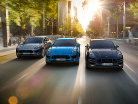
Efficiency-enhancing measures
To improve fuel economy, the Auto Start Stop function switches off the engine when you are coming to a stop at traffic lights, for example. -
 Oil supply
Oil supply
The integrated dry-sump lubrication of the V6 gasoline engines guarantees a reliable supply of oil in all driving situations. The oil reservoir is located directly inside the engine, which saves on... -
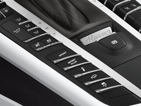
Sport Button
The SPORT button, which is fitted as standard, enables you to select a setup that favors either comfort or sporty performance. At the push of a button, the electronic engine management system... -
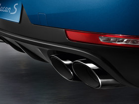
Sport tailpipes
Sport tailpipes are available for your Macan on request. The twin dual-tube tailpipes are specially designed and feature a highly polished chrome-plated stainless steel finish, also... -
 Sport exhaust system
Sport exhaust system
The optional sport exhaust system delivers an even more resonant sound. The chromium-plated sport tailpipes – available in a choice of silver color or black – are a treat for both... -
 Exterior design
Exterior design
The face alone of the new Macan lays bare the dominant sporty genes of its hereditary line. The characteristic headlights are integrated in the bonnet. The large, imposing air intakes of the front... -
 Macan Principle
Macan Principle
Let's begin at the heart. All engines are characterized not only by their impressive performance and high efficiency but, above all, by the typical resonance of their sound. The power of the new...
- Macan offers various suspension boost like no other.
-
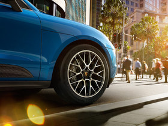
Air suspension
For a high level of comfort and tremendous dynamic performance, you have the option of an air suspension including PASM. With this setup, the car is 15 mm lower than with the steel spring suspension.... -
 Steel spring suspension
Steel spring suspension
The steel spring suspension is standard in all new Macan models. Not only does it fulfil exacting requirements for performance and driving pleasure, it contributes to enhanced driving dynamics, lower... -
 Porsche Active Suspension Management (PASM)
Porsche Active Suspension Management (PASM)
PASM is an electronic damping control system. It actively and continuously adjusts damping force based on current road conditions and driving style. -
 Steering and Power steering Plus
Steering and Power steering Plus
The steering has been engineered for sporty and immediate handling. The tuning of the electromechanical steering system is what makes the Macan models so extraordinarily agile. -
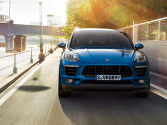
OFF-ROAD button
Would you like to try roads that aren't actually there? A button on the center console sets your Macan to OFF-ROAD mode. All relevant systems switch to a traction-optimized program for... -
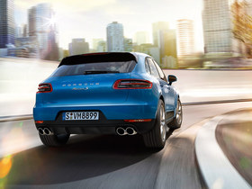
Porsche Torque Vectoring Plus
(PTV Plus)
Sports car makers adore corners. With our technologies, we are forever fanning the flames of the relationship. PTV Plus is an optional system for enhancing both driving dynamics and stability. -
 Sport Chrono Package
Sport Chrono Package
The Sport Chrono Package adds a stopwatch with an analog and a digital display to the cockpit. The performance display in PCM lets you view a range of driving stats, including your total driving time... -
 Wheels and Tire Pressure
Wheels and Tire Pressure
Monitoring System (TPMS)
As with any genuine sports car, the Macan is equipped with wider tires at the rear – just like the 911. The visual impact is not the only effect: the larger footprint at the rear...
- Macan's safety systems are constructed to give the most satisfaction.
-
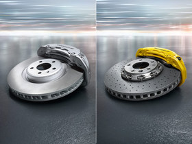
Braking system
At Porsche, we also set ourselves high standards for braking performance. So it goes without saying that our brake systems are super-sized and adapted to the high power output of the engine. -
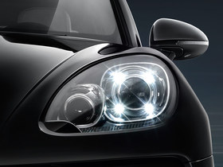
Lighting concept
The Bi-Xenon™ headlights feature automatic and dynamic range control, which provides uniform illumination of the road whether low or... -
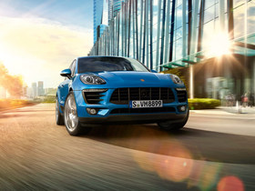
Porsche Stability Management (PSM)
PSM is an electronic control system that maintains stability – and increases driving safety – even at the limits of sporty performance. -
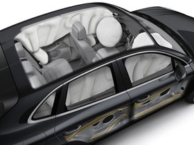
Airbags
All Macan models are equipped, as standard, with full-size airbags for the driver and front passenger. These are supplemented by the Porsche Side Impact Protection System (POSIP). -
 Engineered body design
Engineered body design
The use of ultra- and super-high-strength steels makes a crucial contribution to safety and, at the same time, purposefully encapsulates the principle of lightweight construction.
- There are more than enough options to keep you satisfied.
-
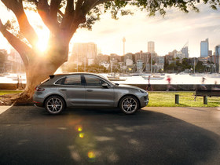
Porsche Car Connect (PCC)
The connection with a Porsche is usually very strong. Even when you are not sitting in it. Porsche Car Connect allows you to access various vehicle data by smartphone and also to externally control... -
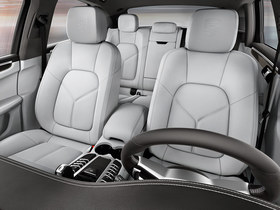
Interior
Five doors. Five seats. Excellent everyday practicality – and an elevated sitting position. That's what you can expect of an SUV. Now let's consider what you can expect of a Porsche: sports car... -
 Seats
Seats
The Adaptive Sport seats with comfort memory package combine ultimate seating comfort with racing-style support. Their side bolsters are... -
 Climate control
Climate control
The Macan models are equipped, as standard, with automatic climate control featuring separate temperature and air flow settings for driver and front passenger as... -
 Porsche Active Safe (PAS)
Porsche Active Safe (PAS)
This system regulates the speed of your vehicle in line with the speed of the vehicle in front and brakes your vehicle automatically – if necessary, even down to a halt. As soon as the road ahead... -
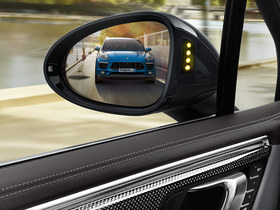
Assistance systems
(PTV Plus)
Lane Change Assist monitors the areas to the rear of the vehicle and the blind spots on either side. Between 19 and 155 mph, the system issues a visual warning signal in the... -
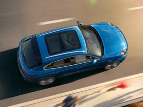
Panoramic roof system
The panoramic roof system is a good square meter in size and comprises two large glass panels. Even when closed, it lives up to its name, letting you enjoy a generous panoramic view – but keeping you... -
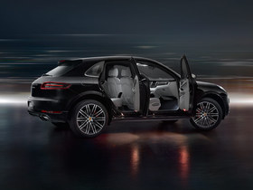
Additional Features
Monitoring System (TPMS)
Privacy glazing : The dark-tinted privacy glazing provides additional privacy in the rear compartment.
Thermally/noise insulated glass : All models also feature a grey toptint on the windshield.
- Macan's safety systems are constructed to give the most satisfaction.
-
 Porsche Communication Management (PCM)
Porsche Communication Management (PCM)
PCM is your central information and communication system. It is powerful and multifunctional, yet easy to operate. -
 CDR Plus audio system
CDR Plus audio system
The CDR Plus audio system is equipped with a high-resolution 7-inch color touchscreen, giving you quick and easy access to the most important functions and menus. -
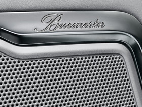
Burmester® High-End Surround Sound System
As a creator of sports cars, we love to push boundaries – sound barriers included. This is demonstrated perfectly by the Burmester® High-End Surround Sound System, which has been optimally... -
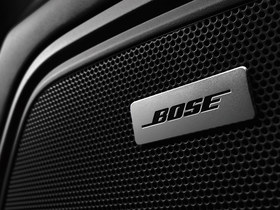
BOSE® Surround Sound System
The BOSE® Surround Sound System is compatible with Porsche Communication Management (PCM) as well as the CDR Plus audio system. The system has been optimally tuned for the models in the Macan range. A... -
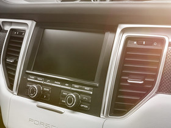
Additional communication systems
The optional quadband GSM telephone module offers convenience and excellent reception. With a SIM card inserted directly into PCM’s integral SIM card reader, calls can be made using...
- Macan can handle many things that you would not have imagined.
-
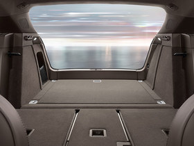
Luggage
The large luggage compartment of the new Macan models is prepared for a wide variety of uses and boasts a capacity of 17.7 cu. ft.. A storage compartment to the side offers additional space. -
 Roof transport system
Roof transport system
These high-quality roof rails are available in aluminum or with a black painted finish. They blend harmoniously into the vehicle's dynamic design. Roof rails are a prerequisite for... -
 Trailer hitch without tow ball
Trailer hitch without tow ball
The Macan is quite simply the most versatile vehicle we have ever built. This includes the capability of being used as a tow vehicle. An optional Towing Package includes a trailer receiver without tow...
- Macan is set not only for the environment but also for you.
-
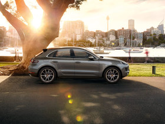
Exhaust emission control
The basic premise of any Porsche is power. It's been that way ever since 1948. But there has always been another principle: efficiency. Again, since 1948. We remain committed to both, and... -
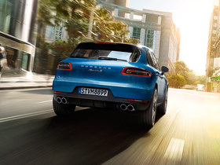
Fuel system
Doing more with comparatively less – another philosophy that the new Macan models live and breathe. The gasoline models are designed to operate on fuels with an ethanol... -
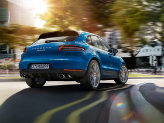
Noise reduction
The characteristic Porsche sound may drive our passion, but acoustics is yet another area in which we continuously strive for optimization. Stiff components and lightweight, temperature-stable... -
 Materials and recycling
Materials and recycling
Long-life and hard-wearing materials reduce maintenance items to a minimum. At the time of an oil filter change, for example, only the recycling-friendly paper insert needs to be exchanged...